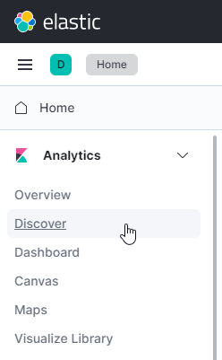
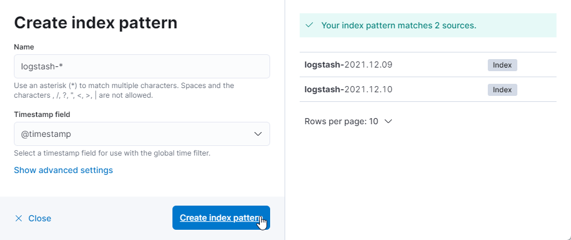
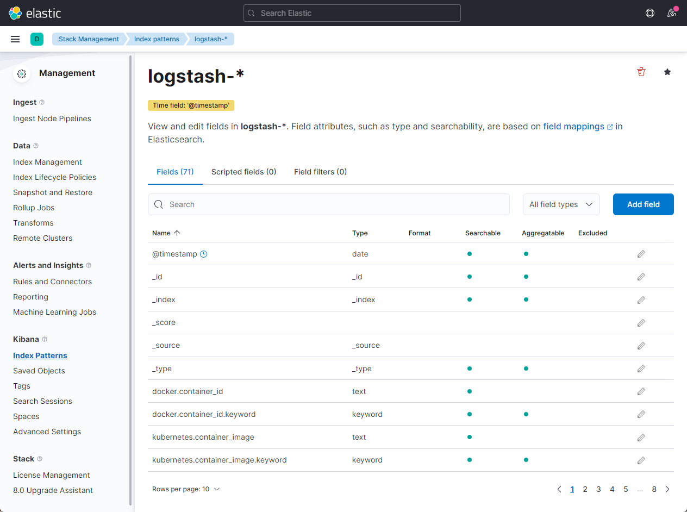
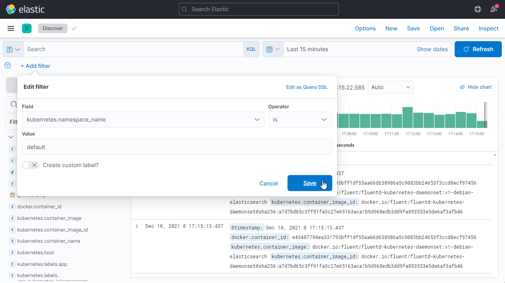
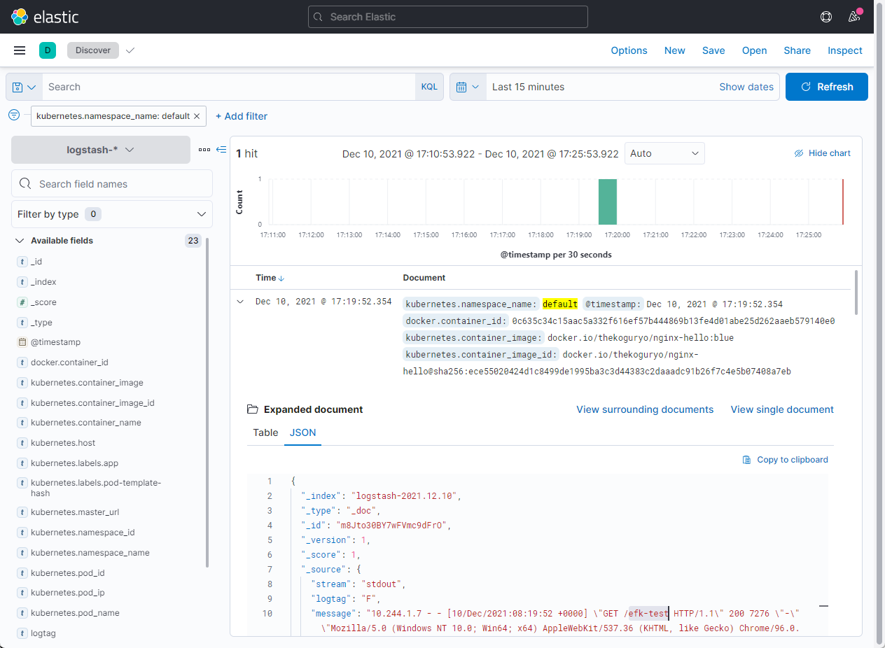

4.2.1 EFK 설치하기
Elastic Search + Kibana 설치
-
설치용 namespace를 만듭니다.
kubectl create ns logging -
Helm Chart를 통해 설치하기 위해 저장소를 등록합니다. 본 예제에서는 Bitnami Helm Chart 저장소를 사용합니다.
helm repo add bitnami https://charts.bitnami.com/bitnami -
설정값 정의
Helm Chart를 설치시 설정가능한 파라미터 목록을 참고하여 변경하고자 하는 값을 입력합니다.
- https://github.com/bitnami/charts/tree/master/bitnami/elasticsearch/#parameters
- 아래 예시는 elasticsearch 내장 kibana를 함께 설치하고, kibana 접근 URL을 이전 장에서 설치한 nginx ingress controller를 사용하는 예시입니다.
cat <<EOF > values.yaml global: kibanaEnabled: true kibana: ingress: enabled: true hostname: kibana.ingress.thekoguryo.ml annotations: kubernetes.io/ingress.class: nginx cert-manager.io/cluster-issuer: letsencrypt-staging tls: true EOF -
elasticsearch helm chart 설치
helm install elasticsearch -f values.yaml bitnami/elasticsearch -n logging -
설치
아래와 같이 설치되며, 실제 컨테이너가 기동하는 데 까지 약간의 시간이 걸립니다.
oke_admin@cloudshell:~ (ap-seoul-1)$ helm install elasticsearch -f values.yaml bitnami/elasticsearch -n logging NAME: elasticsearch ... Elasticsearch can be accessed within the cluster on port 9200 at elasticsearch-coordinating-only.logging.svc.cluster.local To access from outside the cluster execute the following commands: kubectl port-forward --namespace logging svc/elasticsearch-coordinating-only 9200:9200 & curl http://127.0.0.1:9200/ -
설치된 elastic search 내부 주소와 포트를 확인합니다. 이후 Fluentd에서 로그 전송을 위해 사용할 주소입니다.
- 주소: elasticsearch-coordinating-only.logging.svc.cluster.local
- 포트: 9200
Fluentd 구성
참고 문서
-
Fluentd 설치를 위한 Service Account를 생성하고 관련 권한을 정의합니다.
-
configmap 추가 설정정의
- Fluentd 컨테이너 이미지에는 로그 파싱과 관련된 설정들이 컨테이너 이미지내에 /fluentd/etc/ 하위에 .conf 파일로 모두 정의 되어 있습니다. 이 파일들을 재정의 할 수 있습니다. 여기에서는 다른 설정들은 그대로 두고 Parser만 변경합니다.
- 기본 Parser는 Docker Engine이 런타임인 경우 잘 동작하지만, 최근 OSS 쿠버네티스의 기본 런타임인 containerd와 OKE에서 사용하고 있는 cri-o에서는 파싱 에러가 발생합니다. 정상 파싱을 위해 파서 설정(tail_container_parse.conf)만 아래와 같이 cri Parser로 변경합니다.
- https://github.com/fluent/fluentd-kubernetes-daemonset/issues/434#issuecomment-831801690
-
fluentd damonset 정의
설정한 configmap 사용을 위해 Fluentd 문서상의 YAML을 일부 변경하셨습니다.
-
FluentD 설치
kubectl apply -f fluentd-rbac.yaml kubectl apply -f fluentd-configmap-elasticsearch.yaml kubectl apply -f fluentd-daemonset-elasticsearch.yaml
Kibana 설정
-
설치한 kibana을 웹 브라우저로 접속합니다. ingress로 지정한 주소로 접속합니다.
-
Welcome 페이지의 Add Data를 클릭하여 홈으로 이동합니다.
-
왼쪽 상단 내비게이션 메뉴에서 Analytics > Discover 를 클릭합니다.

-
Create index pattern을 클릭합니다.
-
인덱스 패턴을 생성합니다.
오른쪽에서 보듯이 FluentD에서 전송된 로그는 logstash-로 시작합니다.
- Name: logstash-*
- Timestamp field: @timestamp

-
인덱스 패턴이 추가된 결과를 볼 수 있습니다.

-
왼쪽 상단 내비게이션 메뉴에서 Analytics > Discover 를 클릭합니다.
-
생성한 인덱스 패턴을 통해 수집된 로그를 확인할 수 있습니다.
- 테스트 앱의 로그를 확인하기 위해 Add filter를 클릭하여 namespace_name=default 로 지정합니다.

-
테스트 앱을 접속합니다.
-
로그 확인
아래와 같이 kibana에서 테스트 앱의 로그를 확인할 수 있습니다.

-
EKF를 통해 OKE 상의 로그를 수집하는 예시였습니다. EKF에 대한 상세 내용은 제품 관련 홈페이지와 커뮤니티 사이트를 참고하기 바랍니다.
** 이 글은 개인으로서, 개인의 시간을 할애하여 작성된 글입니다. 글의 내용에 오류가 있을 수 있으며, 글 속의 의견은 개인적인 의견입니다. **